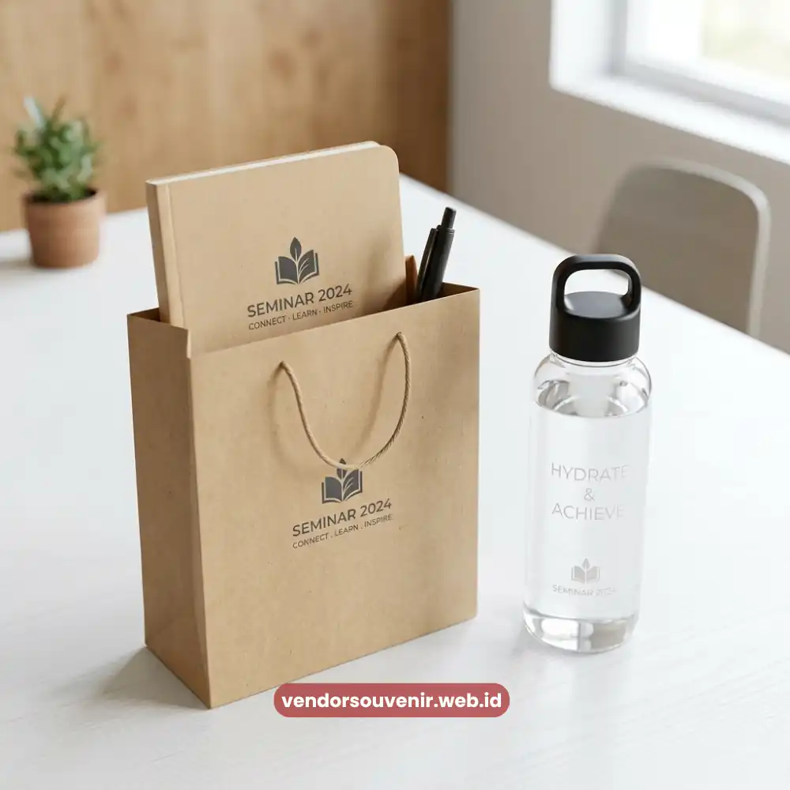

Daftar Isi
Souvenir seminar hemat anggaran adalah pendekatan pemilihan cendera mata yang mengutamakan efisiensi biaya tanpa mengorbankan kualitas dan kesan yang diterima peserta.
Bagi penyelenggara dengan jumlah peserta besar, kunci utamanya bukan mengurangi kualitas produk, melainkan mengelola strategi pembelian, jenis produk, dan skala produksi secara cerdas.
Dengan perencanaan yang tepat, souvenir tetap dapat terasa berkualitas meskipun anggaran per unit terbatas.
- Efisiensi biaya souvenir dapat dicapai melalui pemesanan skala besar tanpa mengurangi kesan kualitas.
- Pemilihan bahan dan desain sederhana namun fungsional membantu menekan biaya produksi.
- Kombinasi beberapa item kecil dalam satu paket dapat memberi kesan lebih bernilai dibanding satu produk mahal.
- Perencanaan anggaran sejak awal mencegah pembengkakan biaya mendadak menjelang hari acara.
Mengapa Efisiensi Anggaran Souvenir Bukan Berarti Mengurangi Kualitas
Banyak penyelenggara acara keliru mengasosiasikan anggaran terbatas dengan souvenir berkualitas rendah.
Padahal, efisiensi biaya sejatinya berkaitan dengan strategi pengadaan, bukan penurunan standar produk.
Pembelian dalam jumlah besar umumnya memberikan harga per unit yang lebih kompetitif dibandingkan pembelian dalam skala kecil.
Sehingga, anggaran yang sama dapat menghasilkan kualitas souvenir yang lebih baik jika direncanakan dengan matang.
Data internal dari beberapa penyedia merchandise korporat pada 2024 menunjukkan bahwa pemesanan souvenir dalam volume besar dengan waktu pemesanan yang cukup jauh dari tanggal acara memberikan penghematan biaya produksi yang signifikan.
Hal ini jauh lebih efisien dibandingkan pemesanan mendadak dengan volume kecil namun terburu-buru.
Cara Menentukan Prioritas Produk Sesuai Anggaran
Bagaimana menentukan produk souvenir yang tepat ketika anggaran terbatas? Langkah pertama adalah memisahkan kebutuhan inti dan kebutuhan tambahan.
Produk fungsional seperti alat tulis atau tumbler sebaiknya menjadi prioritas utama karena tingkat penggunaannya tinggi.
Sementara elemen tambahan seperti kemasan mewah atau aksesori pelengkap dapat disesuaikan belakangan sesuai sisa anggaran yang tersedia.
Pendekatan lain yang efektif adalah menggabungkan beberapa item kecil bernilai terjangkau ke dalam satu paket souvenir.
Cara ini memberikan kesan paket yang lebih lengkap dan bernilai dibandingkan satu produk tunggal dengan harga setara.
Persepsi nilai penerima cenderung dipengaruhi oleh jumlah dan variasi item yang diterima.
Waktu Pemesanan yang Memengaruhi Efisiensi Biaya
Pemesanan souvenir yang dilakukan jauh sebelum hari acara memberikan ruang negosiasi harga dan proses produksi yang lebih terkendali.
Sebaliknya, pemesanan mendadak sering kali memaksa penyelenggara membayar biaya ekspres atau mengorbankan opsi personalisasi.
Keterbatasan waktu produksi menjadi alasan utama mengapa harga bisa melambung tinggi jika dipesan secara mendadak.
Menyusun linimasa persiapan souvenir sejak tahap awal perencanaan acara menjadi salah satu cara paling efektif menjaga anggaran tetap terkendali.

Souvenir Sederhana namun Fungsional untuk Peserta
Menjaga Kesan Berkualitas Meski dengan Biaya Terbatas
Kesan berkualitas pada souvenir tidak selalu ditentukan oleh harga produk, melainkan oleh detail penyajian.
Kerapian kemasan, konsistensi desain, dan relevansi produk dengan kebutuhan peserta memegang peranan penting.
Souvenir sederhana yang dikemas rapi dengan sentuhan personalisasi nama atau logo acara sering kali memberikan kesan lebih premium dibandingkan produk mahal namun dikemas seadanya.
Penyelenggara juga dapat mempertimbangkan skala prioritas berdasarkan segmentasi peserta.
Misalnya, menyediakan souvenir standar untuk seluruh peserta dan souvenir dengan nilai lebih tinggi khusus untuk pembicara atau tamu VIP.
Dengan cara ini, anggaran terdistribusi secara proporsional sesuai kebutuhan dan ekspektasi setiap kelompok peserta.

Dapatkan Souvenir Terbaik Sesuai Anggaran Anda!
Tim ahli kami siap membantu Anda menyusun paket seminar eksklusif yang sesuai dengan budget yang tersedia.
Seluruh souvenir akan dikerjakan dengan standar kualitas percetakan premium dan hasil presisi.
Dapatkan penawaran harga terbaik untuk pemesanan massal!
FAQ Seputar Strategi Menyusun Souvenir dengan Anggaran Terbatas
Bagaimana cara menghemat biaya souvenir seminar tanpa mengurangi kualitas?
Caranya adalah dengan memesan dalam volume besar, merencanakan waktu pemesanan lebih awal, dan memilih produk fungsional dengan desain sederhana namun rapi.
Apakah souvenir murah bisa tetap terlihat premium?
Bisa, terutama jika kemasan dirancang rapi dan produk dipersonalisasi dengan logo atau nama acara secara konsisten.
Berapa jumlah minimum pemesanan agar mendapat harga lebih efisien?
Jumlah minimum bervariasi tergantung jenis produk dan penyedia souvenir, sehingga sebaiknya dikonsultasikan langsung sesuai kebutuhan acara.
Dengan strategi yang tepat, mengelola anggaran untuk souvenir seminar tidak berarti harus mengorbankan kualitas dan fungsi.
Maroon Souvenir
Partner Corporate Gift terpercaya di Indonesia. Berpengalaman melayani ratusan perusahaan sejak 2018.
Lihat Portofolio Kami